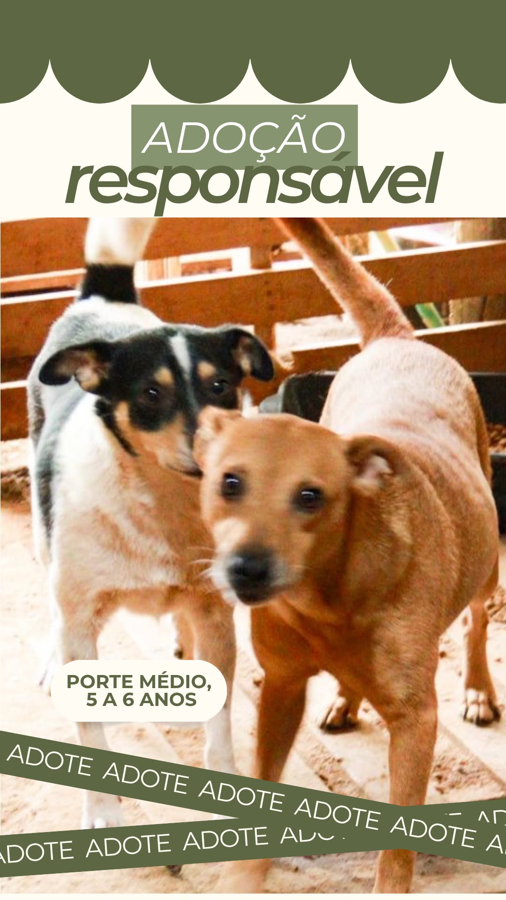
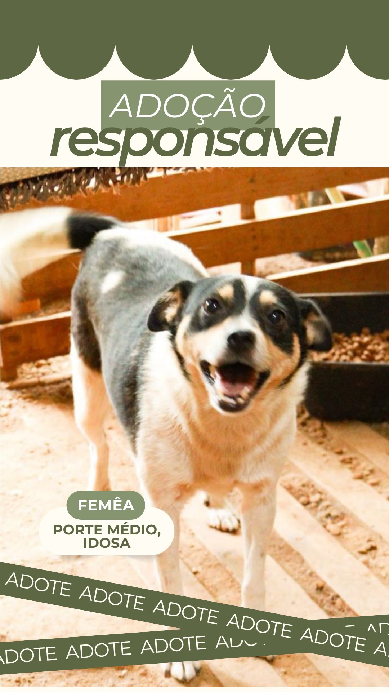
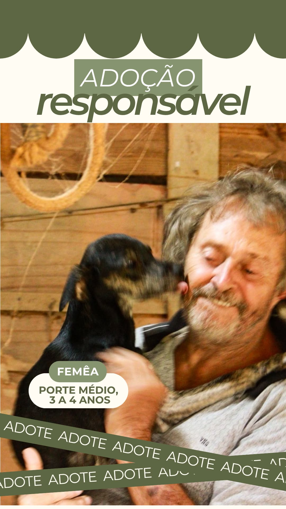

Adoção responsável
Abrigo Patinhas do Vale
Cada adoção abre espaço para um novo resgate. Adotar é combater o abandono, dar dignidade a quem esperou por cuidado e transformar carinho em compromisso.



Animais para adoção
Conheça quem está esperando uma família
Use os filtros para comparar porte, sexo e situação de adoção.
Parte matemática do projeto
Dados que ajudam o abrigo a decidir prioridades
Os gráficos usam datas de entrada simuladas para demonstrar os cálculos pedidos.
Tempo no abrigo por animal
Contato para adoção
Quer adotar ou ajudar?
Envie uma mensagem para o abrigo informando o nome do cão, sua cidade e se já tem outros animais em casa.